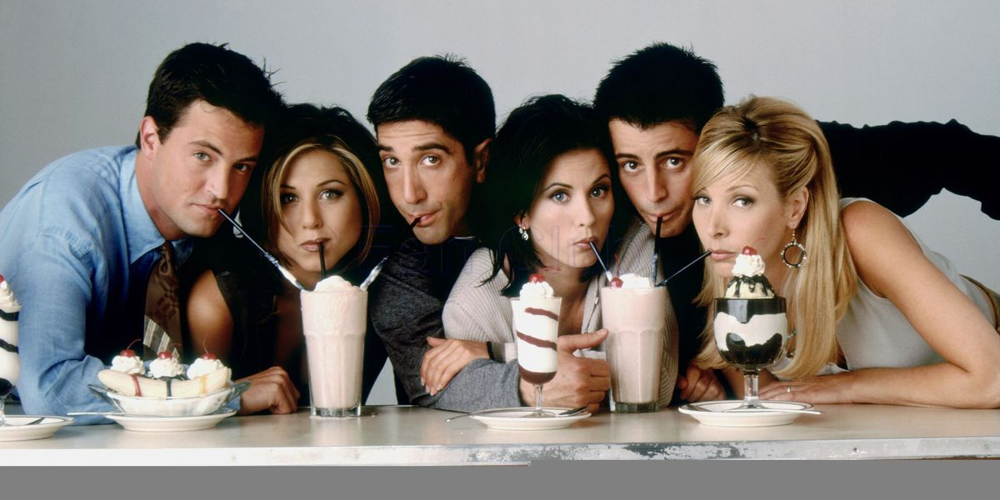

Rachel Greene lives in New York city with her best friend Monica. She used to serve coffee but now she works in fashion. Ever since she left her fiance Barry at the alter she has had a rough love life that consumed the majority of her personal life. She gave up the life of an orthodontist's wife and declared financial freedom from her parents. Monica, her best friend, has an older brother Ross who was in love with Rachel since high school despite her chubby ankles and low career aspirations but he messed that up when he slept with Chloe the copy girl when he and Rachel were "on a break". Since then she dated here and there and eventually married Ross while drunk in Vegas but then got a divorce. She went on to have a daughter, Emma, with Ross and married him again. Her parents got a divorce a few years ago and they cannot stand each other. She also has two sisters, Jill and Amy, both of which are not good people due to their spoiled upbringing. Good thing she had Ross and her Friends <3.
From left to right: Chandler, Rachel, Ross, Monica, Joey, and Phoebe
Chandler: Ross's college roommate who is married to Monica
Rachel: Monica's high school best friend and Ross's baby momma
Ross: Monica's brother and Rachel's baby daddy
Monica: the true star of the show and apartment owner
Joey: a hunk that lived across the hall from Monica
Phoebe: even she doesn't know how she got here

Shopping at Bloomingdales, being an awkward airhead, cheerleading, bickering with Monica, sailing, dating lots of attractive men, bullying overweight students named Will Colbert, reconnecting with her old sorority sisters, double cheese pizza with fat free crust, the Pottery Barn, the Soapies, italian men, persuading women to get unflattering hair cuts, laughing when men touch her butt, backpacking through Western Europe, Barry Manilow karaoke, working on her compuper skills, sleeping in Ross's old shirts, stealing Monica's thunder, weekend ski trips with the gang, cheesecake, writing 18 page letters, penguins named Huggsy, young guys with cute butts, stealing Chandler's TV guide, rereading Little Women, baby beauty contests, and loving Ross.

Cleaning, FICA, putting things in her eyes, smoking, pet birds, macadamia nuts, solo trips to Greece, older men with lots of emotions, serving coffee, men who bathe with their sisters, the I Hate Rachel Greene Club, and hairless cats.
There's much debate surrounding the correct spelling of Rachel's last name.. is it spelled Green or Greene?
According to Fandom.com it's Greene. Her last name can be seen spelled as "Greene" in these three episodes: